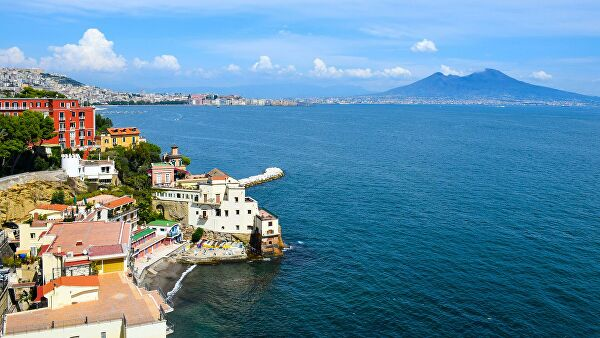

Неаполь, крупнейший город южной Италии, ошеломляет сочетанием старинного обаяния и современной мужественности. Это один из старейших городов Европы со множеством объектов искусства, архитектуры и археологии, что позволяет ему сохранять особый облик среди других мегаполисов. Но знаменитая пицца, приготовленная в дровяной печи, обладает еще большей притягательной силой. В историческом центре Неаполя (объекте Всемирного наследия ЮНЕСКО) многочисленные пиццерии разбросаны среди потрясающих достопримечательностей.
